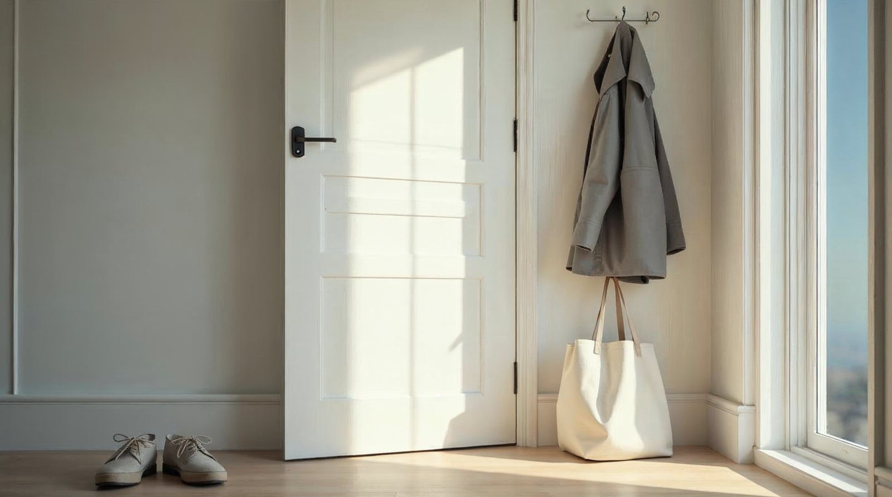
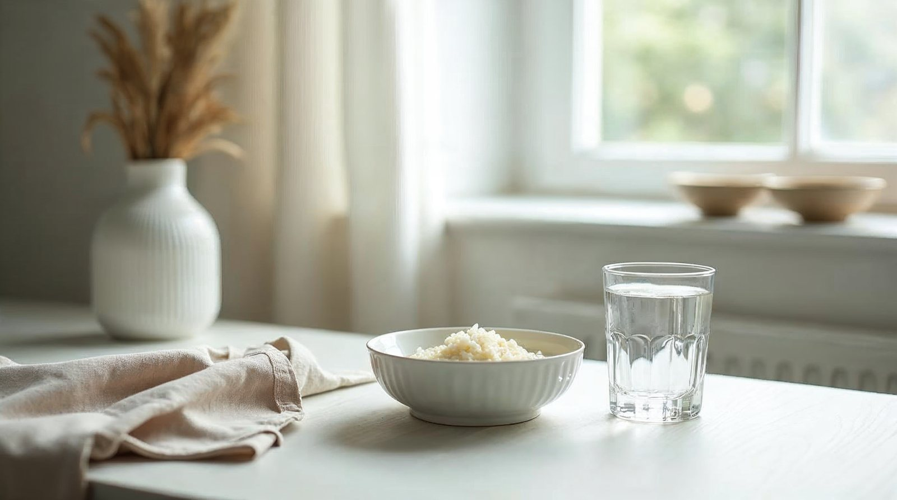
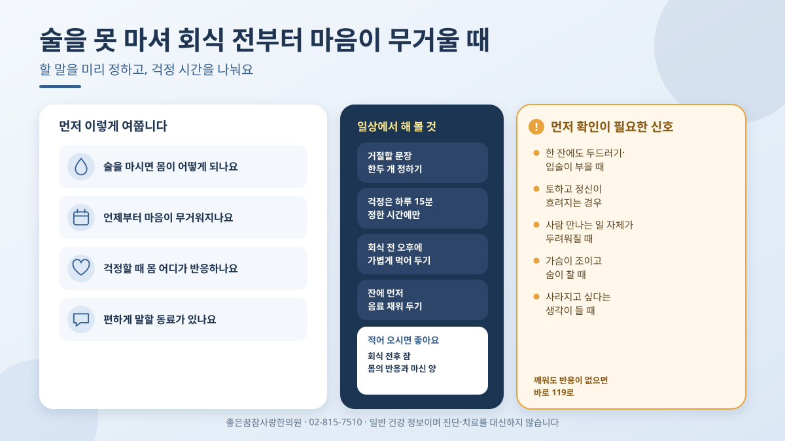

이종호 한의사 감수좋은꿈참사랑한의원 대표원장 (한의사 면허번호 19769)발행 2026-11-27 · 수정 2026-11-27
이 글의 차례
술 한두 잔에도 얼굴이 빨개지고 가슴이 뛰거나 머리가 아픈 분에게 연말 회식은 즐거운 자리이기 전에 부담스러운 일정이 되기 쉽습니다.
단체 대화방에 회식 날짜가 올라오는 순간부터 '이번에는 어떻게 거절하지', '분위기를 깬다고 생각하면 어쩌지', '지난번처럼 억지로 마시다 힘들면 어쩌지' 하는 생각이 떠올라, 정작 회식 날보다 기다리는 며칠 동안 잠이 얕아지고 속이 더부룩해지는 분이 많습니다.
이렇게 일이 일어나기 전부터 마음이 먼저 긴장하는 것은 자연스러운 반응이고, 걱정이 큰 만큼 미리 정해 둘 것을 정해 두면 그 무게를 덜 수 있습니다. 거절할 때 쓸 짧은 말을 한두 문장 정해 두고, 잔에는 처음부터 음료나 물을 채워 두며, 몇 시까지 함께하고 언제 일어날지 그날의 계획을 미리 세워 보세요.
무엇보다 술이 몸에 받지 않는 것은 체질의 차이이지 사회생활을 못하는 것이 아닙니다. 회식이 끝난 뒤에도 몇 주씩 출근이 두렵고 잠과 기분이 무너져 있다면 혼자 견디지 말고 상담을 받아 보세요.
왜 회식 날보다 기다리는 며칠이 더 힘들까요
- 술을 마시면 몸 안에서 알코올이 아세트알데하이드라는 물질로 바뀌고, 이를 다시 분해하는 효소가 일을 합니다. 이 효소의 힘이 약한 체질은 동아시아 사람에게 비교적 흔한데, 조금만 마셔도 얼굴이 붉어지고 가슴이 뛰며 머리가 아프고 속이 메스꺼워질 수 있습니다.
- 이런 체질에서 억지로 술을 이어 마시는 것은 몸에 부담이 크다는 연구들이 있습니다. 몸이 보내는 신호를 기억하고 있기에 마음이 먼저 경계하는 것은 어쩌면 당연한 일입니다.
- 지난 회식에서 권하는 술을 거절하지 못해 마셨다가 화장실에서 토하거나, 다음 날까지 힘들었던 기억이 있다면 비슷한 일정만 잡혀도 그 장면이 먼저 떠오릅니다.
- 거절은 상대의 마음을 거스를지 모른다는 걱정과 함께 옵니다. '분위기를 깨는 사람'으로 보일까 하는 생각이 머릿속에서 여러 장면으로 되풀이되며, 잠자리에서도 대화를 미리 연습하게 됩니다.
- 일이 일어나기 전부터 마음이 먼저 긴장하는 것을 예기불안이라고 합니다. 실제로 그 자리에 가 보면 생각보다 짧게 지나가는 경우가 많지만, 기다리는 동안에는 걱정이 실제보다 크게 느껴집니다.
- 12월에는 부서 회식, 팀 송년회, 거래처 모임이 몰려 한 번 지나가면 다음 일정이 이어집니다. 쉬어 갈 틈이 없으니 긴장도 풀리지 않습니다.
- 한의학에서는 걱정이 풀리지 않고 마음에 맺히면 기운이 막혀 가슴과 명치가 답답하고 한숨이 잦아진다고 보고, 결정을 내리지 못하고 작은 일에도 쉽게 놀라는 모습을 담의 기운이 약한 상태로 설명하기도 합니다.

먼저 이렇게 여쭙니다
- 술을 마시면 몸에 어떤 반응이 오는지(얼굴 붉어짐, 두근거림, 두통, 메스꺼움, 두드러기) 여쭙니다.
- 회식 날짜가 잡힌 뒤 언제부터 마음이 무거워지는지, 잠과 식사가 어떻게 달라지는지 여쭙니다.
- 걱정이 들 때 몸 어디에 먼저 반응이 오는지(명치, 가슴, 어깨, 배) 여쭙니다.
- 지난 회식에서 억지로 마셨다가 힘들었던 경험이 있는지 여쭙니다.
- 회사 분위기가 어떤지, 술을 권하는 사람이 정해져 있는지, 편하게 이야기할 수 있는 동료가 있는지 여쭙니다.
- 연말에 회식이나 모임이 몇 번쯤 잡혀 있는지 여쭙니다.
- 평소에도 사람이 많은 자리나 남의 시선 앞에서 긴장이 큰 편인지 여쭙니다.
- 한약이나 다른 약을 드시고 있는지, 술과 함께 조심해야 할 약이 있는지 여쭙니다.
일상에서 먼저 해 볼 수 있는 것
회식 며칠 전: 할 말 정해 두기
- 거절할 때 쓸 문장을 짧게 한두 개 정합니다. 예를 들어 '제가 술이 몸에 잘 안 받아서요, 음료로 함께할게요', '조금만 마셔도 얼굴이 빨개지고 두근거려서 오늘은 음료로 할게요'처럼 이유를 짧게 말하고 대안을 함께 말하면 분위기가 덜 어색합니다.
- 문장을 소리 내어 두세 번 연습한 뒤에는 더 연습하지 않습니다. 같은 장면을 잠자리에서 계속 떠올리면 걱정이 커질 뿐 준비가 더 되지는 않습니다.
- 회식에서 마음이 맞는 동료 한 명에게 '저는 술을 잘 못 마셔서 음료로 할 생각'이라고 미리 말해 둡니다. 곁에서 한마디 거들어 줄 사람이 있으면 마음이 한결 가볍습니다.
- 회식 걱정은 하루 15분, 저녁 7시쯤처럼 정한 시간에만 떠올리고, 그 밖의 시간에 떠오르면 메모만 하고 넘깁니다.
회식 당일
- 점심을 거르지 않고, 회식 전 오후 4~5시쯤 바나나나 삶은 달걀처럼 가벼운 것을 먹어 둡니다. 빈속에 긴장하면 속이 더 불편해지기 쉽습니다.
- 오후에는 커피를 줄입니다. 카페인은 긴장으로 인한 두근거림을 더 키울 수 있습니다.
- 자리에 앉으면 먼저 잔에 사이다나 탄산수, 물을 채워 둡니다. 빈 잔은 술을 권하는 신호가 되기 쉽습니다. 단 음료만 계속 마시면 혈당과 속에 부담이 되니 탄산수나 보리차를 섞어 마십니다.
- 건배는 음료 잔으로 함께합니다. 잔을 들고 웃으며 함께하는 것만으로도 자리에 함께하는 마음은 전해집니다.
- 술을 자주 권하는 사람 바로 옆자리보다는 대화가 편한 동료 옆에 앉습니다.
- 1차만 함께하기로 했다면 시작할 때 '오늘은 9시쯤 먼저 일어나겠습니다'라고 미리 말해 둡니다. 나중에 말하는 것보다 처음에 말하는 편이 덜 어색합니다.
- 고기와 채소, 두부 같은 음식을 천천히 먹으며 대화에 집중합니다. 손이 음식과 대화로 바쁘면 잔에 쏠리는 시선도 줄어듭니다.
회식이 끝난 뒤
- 집에 와서 '오늘 이 말은 괜히 했나' 하는 생각이 떠오르면, 잘 넘긴 장면 하나를 함께 떠올려 봅니다. 대부분의 사람은 누가 음료를 마셨는지를 생각보다 금방 잊습니다.
- 따뜻한 물로 샤워하고, 휴대폰으로 회식 사진이나 단체 대화방을 계속 보지 않습니다.
- 다음 날은 평소 시각에 일어나고, 점심 뒤 10~15분 걷습니다.
혹시 마셔야 했다면
- 한 잔을 넘기지 않고, 물을 함께 마시며, 얼굴이 붉어지고 두근거리면 그 자리에서 더 마시지 않습니다.
- 몸이 술을 잘 분해하지 못하는 체질이라면 한 잔에도 크게 힘들 수 있습니다. 메스꺼움이 심하거나 어지러우면 혼자 화장실에 오래 있지 말고 동료에게 알립니다.
거절해도 계속 강요받는다면
- 거절했는데도 반복해서 술을 강요받거나, 술을 마시지 않는다는 이유로 불이익을 받는다면 혼자 참지 말고 회사의 고충 처리 창구나 노동 관련 상담 기관에 도움을 청할 수 있습니다.
상황별 예시
- 예를 들어 맥주 반 잔에도 얼굴이 붉어지는 30대 직장인이 부서 송년회 날짜가 공지된 날부터 거절할 장면을 머릿속으로 되풀이하다 새벽 1시가 넘어 잠드는 경우, 거절할 문장을 두 개 정해 소리 내어 연습한 뒤 메모에 적어 두고, 그 뒤로는 저녁 7시에 15분 동안만 회식 생각을 하는 시간으로 정해 봅니다.
- 예를 들어 입사 첫해라 회식 자리가 처음인 신입 사원이 '술을 안 마시면 눈 밖에 나는 건 아닐까' 걱정하며 며칠째 점심이 잘 넘어가지 않는 경우, 먼저 사수나 가까운 동료에게 회사 회식 분위기를 물어봅니다. 생각보다 음료로 함께하는 사람이 많다는 것을 알게 되면 걱정이 한결 줄어들 수 있습니다.
- 예를 들어 지난 회식에서 권하는 술을 거절하지 못해 마셨다가 화장실에서 쓰러질 뻔한 기억이 있는 직장인이, 이번 회식 공지 뒤로 가슴이 두근거리고 명치가 답답한 경우, 그 일을 믿을 만한 동료나 상사에게 짧게 알리고 이번에는 처음부터 음료 잔을 채워 둡니다. 술을 마신 뒤 의식이 흐려졌던 일이 있었다면 그 자체를 의료진과 상의해 둡니다.
- 예를 들어 한약을 먹는 중에 연말 회식이 연달아 잡힌 경우, 한약 복용 중이라는 이유를 거절할 말로 써도 되고, 술과 한약을 어떻게 조절할지는 처방한 한의사와 상의합니다.
- 예를 들어 회식이 다 끝난 뒤에도 출근할 생각만 하면 가슴이 답답하고, 동료들을 피하게 되며, 2주 넘게 잠이 얕은 경우에는 상담을 받아 보세요.

자주 하는 오해
- 술을 못 마시는 것은 사회생활을 못하는 것이라고 여기는 분이 있지만, 술을 분해하는 힘은 타고나는 체질의 차이가 큽니다. 마시는 양이 관계를 정하지는 않습니다.
- 자꾸 마시다 보면 술이 늘 거라고 생각하기 쉽지만, 얼굴이 붉어지고 두근거리는 체질은 마셔서 바뀌는 것이 아니라 익숙해진 것처럼 느껴질 뿐인 경우가 많고, 그사이 몸의 부담은 쌓일 수 있습니다.
- 거절하면 분위기가 깨진다고 걱정하지만, 짧고 밝게 대안을 함께 말하면 대개 자연스럽게 넘어갑니다. 오히려 억지로 마시고 힘들어하는 모습이 주위를 더 걱정하게 만들 수 있습니다.
- 회식 전에 걱정되는 장면을 많이 연습할수록 잘 넘길 수 있다고 여기기 쉽지만, 연습은 두세 번이면 충분하고 그 이상은 걱정을 키우기 쉽습니다.
- 숙취해소 음료를 먼저 마시면 괜찮을 거라고 생각하는 분도 있지만, 술을 분해하는 체질 자체를 바꾸지는 못합니다.
스스로 점검해 보세요
- 술 한두 잔에도 얼굴이 붉어지고 두근거리거나 머리가 아프다.
- 회식 날짜가 잡히면 그날부터 잠드는 데 30분 넘게 걸리는 날이 생긴다.
- 잠자리에서 거절할 장면을 몇 번씩 되풀이해 떠올린다.
- 회식이 다가오면 명치가 답답하거나 입맛이 떨어진다.
- 지난 회식에서 억지로 마셨다가 힘들었던 기억이 자주 떠오른다.
- 12월에 회식이나 모임이 세 번 이상 잡혀 있다.
- 회식이 끝난 뒤에도 그날 한 말과 행동을 며칠씩 곱씹는다.
한의원에서 함께 살필 수 있는 경우
- 회식이나 모임을 앞두면 며칠씩 잠이 얕아지고 속이 더부룩해지는 일이 반복되는 경우
- 긴장하면 명치가 답답하고 가슴이 두근거리며, 어깨와 목이 굳는 경우
- 연말 모임이 이어지며 몸과 마음이 함께 지쳐 쉬어도 피로가 풀리지 않는 경우
- 한약을 먹는 중인데 회식과 술을 어떻게 조절할지 상의하고 싶은 경우
좋은꿈참사랑한의원에서는 첫 방문 때 요즘 잠과 식사가 어떤지, 회식이나 모임을 앞두고 몸과 마음이 어떻게 달라지는지, 술을 마셨을 때 몸의 반응은 어떤지 차례로 여쭙습니다. 회사 사정은 말씀하실 수 있는 만큼만 들려주시면 됩니다. 그다음 맥부터 짚어 보고, 혀와 배를 살펴 긴장이 소화와 몸 어디에 머물러 있는지 확인합니다.
그 뒤 할 말을 미리 정하고 걱정하는 시간을 나누는 방법, 회식 날 먹는 순서와 귀가 뒤 잠자리 정리처럼 생활에서 해 볼 것을 함께 정하고, 필요하면 침이나 한약을 상의합니다. 다시 오시면 지난 회식이 어떻게 지나갔는지 이어서 여쭙고, 다음 일정을 앞두고 무엇을 다르게 해 볼지 함께 이야기합니다.
얼마나 지켜보고 언제 상담할까요
- 이번 연말 회식 몇 번 동안 할 말 정하기, 걱정 시간 나누기, 음료 잔 채우기를 해 보며 회식 전후의 잠을 기록합니다.
- 회식이 끝나고 며칠 안에 잠과 식사가 평소대로 돌아온다면, 같은 방법을 다음 모임에도 이어 갑니다.
- 회식이 없는 기간에도 잠이 얕고 긴장이 이어지거나, 모임 걱정 때문에 일상이 흔들린다면 상담을 받아 보세요.
- 아래 신호가 있으면 기다리지 말고 도움을 청합니다.
이렇게 기록해 오시면 상담이 쉬워집니다
- 회식 날짜와 그 전후 1주일의 잠드는 시각, 깬 횟수
- 회식을 앞두고 나타난 몸의 반응(명치 답답함, 두근거림, 입맛 변화, 어깨 긴장)
- 술을 마셨을 때의 반응과 마신 양
- 회식에서 써 본 방법과 어떻게 지나갔는지
- 12월 모임 일정
- 복용 중인 약과 한약, 영양제
이런 증상은 먼저 확인이 필요합니다
- 술 한 잔에도 두드러기가 돋거나 숨이 차고 입술이 붓는 경우
- 술을 마신 뒤 심하게 토하고 정신이 흐려지거나, 깨워도 잘 깨지 않는 경우
- 스스로를 해칠 생각이 들면 ☎ 109로 바로 연락하세요.
이런 신호가 있으면 한의원보다 가까운 병원이나 응급실을 먼저 찾으세요.
관련 글
- 연말 모임이 이어진 뒤 혼자 쉬는 시간이 꼭 필요하다고 느껴질 때는 어떻게 하나요?
- 긴장하면 얼굴이 붉어지고 열이 오를 때는 어떻게 살피나요?
- 한약을 먹는 중인데 연말 회식이 줄줄이 잡혔다면 술은 어떻게 해야 하나요?

여쭙는 것
- 술을 마시면 몸에 어떤 반응이 오는지(얼굴 붉어짐, 두근거림, 두통, 메스꺼움, 두…
- 회식 날짜가 잡힌 뒤 언제부터 마음이 무거워지는지, 잠과 식사가 어떻게 달라지는지…
- 걱정이 들 때 몸 어디에 먼저 반응이 오는지(명치, 가슴, 어깨, 배) 여쭙니다.
생활에서 해 볼 것
- 거절할 때 쓸 문장을 짧게 한두 개 정합니다. 예를 들어 '제가 술이 몸에 잘 안…
- 문장을 소리 내어 두세 번 연습한 뒤에는 더 연습하지 않습니다. 같은 장면을 잠자리…
- 회식에서 마음이 맞는 동료 한 명에게 '저는 술을 잘 못 마셔서 음료로 할 생각'이…
한의원에서 함께 살필 것
- 회식이나 모임을 앞두면 며칠씩 잠이 얕아지고 속이 더부룩해지는 일이 반복되는 경우
- 긴장하면 명치가 답답하고 가슴이 두근거리며, 어깨와 목이 굳는 경우
- 연말 모임이 이어지며 몸과 마음이 함께 지쳐 쉬어도 피로가 풀리지 않는 경우
먼저 확인이 필요한 신호
- 술 한 잔에도 두드러기가 돋거나 숨이 차고 입술이 붓는 경우
- 술을 마신 뒤 심하게 토하고 정신이 흐려지거나, 깨워도 잘 깨지 않는 경우
- 스스로를 해칠 생각이 들면 109로 바로 연락하세요.
한눈에 보는 표
| 구분 | 핵심 |
|---|---|
| 여쭙는 것 | 술을 마시면 몸에 어떤 반응이 오는지(얼굴 붉어짐, 두근거림, 두통, 메스꺼움, 두드러기) 여쭙니다. 회식 날짜가 잡힌 뒤 언제부터 마음이 무거워지는지, 잠과 식사가 어떻게 달라지는지 여쭙니다. |
| 생활에서 해 볼 것 | 거절할 때 쓸 문장을 짧게 한두 개 정합니다. 예를 들어 '제가 술이 몸에 잘 안 받아서요, 음료로 함께할게요', '조금만 마셔도 얼굴이 빨개지고 두근거려서 오늘은 음료로 할게요'처럼 이유를 짧게 말하고 대안을 함께 말하면 분위기가 덜 어색합니다. 문장을 소리 내어 두세 번 연습한 뒤에는 더 연습하지 않습니다. 같은 장면을 잠자리에서 계속 떠올리면 걱정이 커질 뿐 준비가 더 되지는 않습니다. |
| 한의원에서 함께 살필 것 | 회식이나 모임을 앞두면 며칠씩 잠이 얕아지고 속이 더부룩해지는 일이 반복되는 경우 긴장하면 명치가 답답하고 가슴이 두근거리며, 어깨와 목이 굳는 경우 |
| 먼저 확인이 필요한 신호 | 술 한 잔에도 두드러기가 돋거나 숨이 차고 입술이 붓는 경우 술을 마신 뒤 심하게 토하고 정신이 흐려지거나, 깨워도 잘 깨지 않는 경우 |
자주 묻는 질문
술 한두 잔에 얼굴이 빨개지는 건 체질인가요?
술을 분해하는 효소의 힘이 약한 체질에서 흔히 보이는 반응입니다. 얼굴이 붉어지고 두근거린다면 몸이 술을 버거워한다는 신호로 보고, 억지로 이어 마시지 않는 편이 좋습니다.
거절할 때 어떤 말을 하면 덜 어색할까요?
이유를 짧게 말하고 대안을 함께 말하면 자연스럽습니다. '제가 술이 몸에 잘 안 받아서요, 음료로 함께할게요'처럼 밝게 말하고 음료 잔으로 건배에 함께하면 대개 큰 무리 없이 넘어갑니다.
회식 생각에 잠이 안 올 때는 어떻게 하나요?
걱정되는 생각은 저녁의 정한 시간에만 하고, 잠자리에서 떠오르면 머리맡 메모지에 한 줄 적은 뒤 내려놓으세요. 20분이 지나도 잠이 오지 않으면 잠시 일어나 어두운 곳에서 조용히 있다가 졸릴 때 다시 누우세요.
한약을 먹는 중인데 회식에서 술을 조금 마셔도 되나요?
한약과 술을 함께하면 속과 잠에 부담이 될 수 있어, 복용 기간에는 술을 피하시도록 권하는 경우가 많습니다. 처방받은 한약에 따라 다를 수 있으니 회식 일정이 있으면 미리 말씀해 주세요.
모임 걱정 같은 마음의 문제도 한의원에서 이야기해도 되나요?
네, 편하게 말씀하셔도 됩니다. 마음의 긴장이 잠과 소화, 어깨와 명치의 불편으로 이어지는 경우가 많아 생활과 마음을 함께 여쭙고 맥부터 짚어 살핍니다.
좋은꿈참사랑한의원은 재진 때 지난번 이야기부터 이어서 여쭙니다. 진료시간과 예약은 오시는 길에서 확인하세요.
어디서 상담받을 수 있나요?
좋은꿈참사랑한의원은 서울 동작구 만양로2길 2 신성빌딩 3층·5층(서울 동작구 상도동, 7호선 상도역 3번 출구 근처)에 있습니다. 한의사 3명(이종호 대표원장, 조영기 수석진료원장, 정원영 진료원장)이 진료합니다. 진료시간은 평일 09:30~20:00(점심 13:00~14:00), 토·일·공휴일 09:30~15:00이며, 방문 전 전화로 확인을 권합니다. 예약은 네이버 예약, 카카오톡 상담, 전화 02-815-7510로 받습니다.
이 글은 일반적인 건강 정보이며 개인의 진단이나 치료를 대신하지 않습니다. 증상이 있거나 복용 중인 약이 있다면 진료를 통해 확인하세요. 치료 효과는 개인마다 다를 수 있습니다.
작성 기준: 일반적으로 알려져 있는 건강 정보를 참고해 정리했습니다(대표원장 감수). 증상 기록은 1~2주 동안 하루 1회, 비슷한 시간에 적어 오시면 지난 상태와 비교하기 쉽습니다.